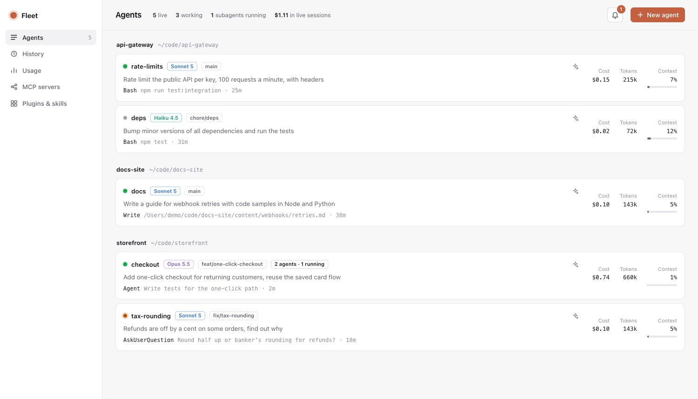
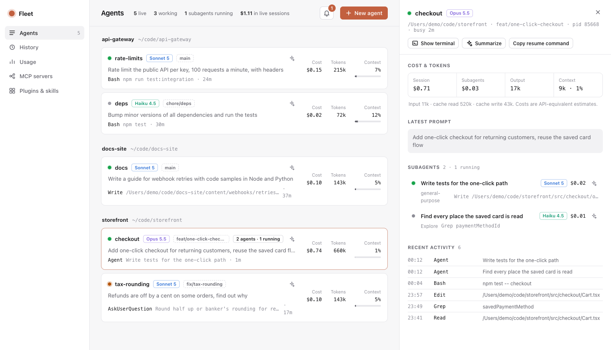
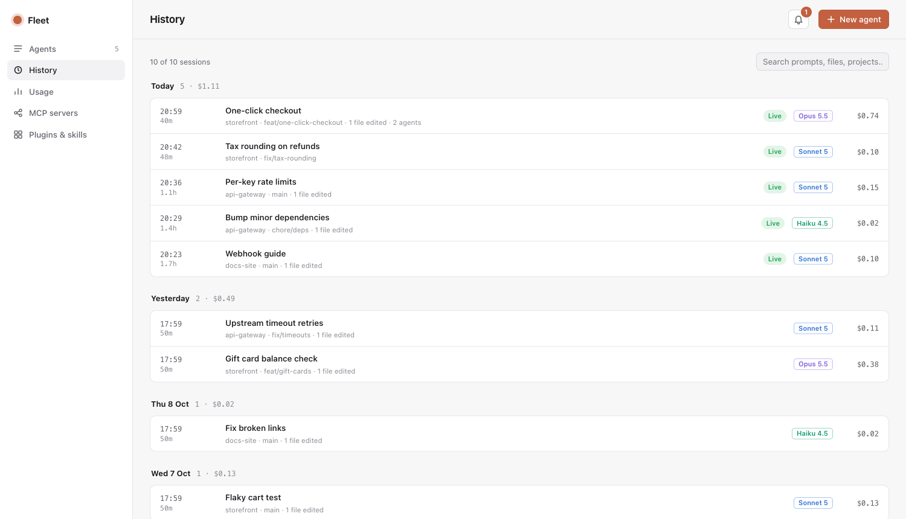

Fleet docs
Fleet is a local dashboard for every Claude Code session on your Mac. It runs on your machine, reads what Claude Code already writes, and opens in your browser.
Install
You need macOS, Node 20 or later, and Claude Code (claude) signed in.
npm install -g @jainil_desai/fleet
fleetFleet starts a server on http://localhost:7788 and opens it. Options:
| Option | What it does |
|---|---|
--port 8000 | Use another port. FLEET_PORT works too. |
--no-open | Start the server without opening a browser tab. |
--autostart | Start Fleet at login, in the background. See Start at login. |
--stop, --start | Stop Fleet for now, or start the background copy again. See Start at login. |
--help | List the options. |
To try it without installing, run npx @jainil_desai/fleet. Install it globally if you want plan limits, because that setup points at Fleet's install folder, which npx doesn't keep.
From source: git clone https://github.com/jainilDesai/fleet.git, then node bin/fleet.js in that folder. There is nothing to build or install.
First run
Running sessions show up within a couple of seconds, wherever you started them: Terminal, iTerm, or an editor's built-in terminal. Fleet starts reading your past sessions for History in the background; about 1,000 sessions take around 12 seconds.
The first time you launch an agent or click Show terminal, macOS asks whether your terminal (or Node) may control Terminal or iTerm. Allow it once.
brew install terminal-notifier makes notification banners clickable. See Notifications.Start at login
Fleet can run in the background all the time, so notifications and History never miss a session.
fleet --autostart # start at login, in the background, and start it now
fleet --stop # stop it for now; it starts again at the next login
fleet --start # start the background copy again now
fleet --no-autostart # turn auto-start off and stop the background copyfleet --stop also stops a copy you started by hand. Stopping the background copy any other way doesn't stick: macOS restarts it, because it's set to come back after a crash.
The background copy doesn't open a browser tab; open http://localhost:7788 whenever you want it. It restarts if it crashes and writes to ~/.fleet/fleet.log. It uses about 100 MB of memory and around 1% CPU.
Under the hood this is a standard macOS LaunchAgent at ~/Library/LaunchAgents/com.jainildesai.fleet.plist. Add --port <n> to --autostart to use another port.
fleet --autostart again: the login item records the Node it was set up with. Fleet reminds you when you start it by hand.Update and uninstall
npm install -g @jainil_desai/fleet@latest # update
npm uninstall -g @jainil_desai/fleet # removeIf you turned on start at login, run fleet --no-autostart before uninstalling. Fleet keeps its own files in ~/.fleet; delete that folder to remove its history and settings. If you set up plan limits, also remove the statusLine block from ~/.claude/settings.json, or put back the one Fleet wrapped.
Agents
Every live Claude Code session, grouped by repo. Each card shows:
- Its status: working (green), waiting on you (amber) or idle (grey).
- Its model, git branch, the latest prompt, and the tool call it's running now.
- Its cost and tokens, including all of its subagents, and how full its context window is.
The bar at the top counts live sessions, how many are working, running subagents, and the total cost of live sessions.

A session's panel
Click a session to open its panel:
- Cost and tokens, split between the session and its subagents, with input, cache and output detail.
- Latest prompt, in full.
- Subagents, as a tree (nested ones included), each with its type, model, state, cost and current action.
- Workflows, as phase columns (for example Foundation, Build, Integrate, Review) with every workflow agent under its phase.
- Recent activity, a timeline of the last tool calls.
Show terminal brings the session's window forward and, for Terminal and iTerm, selects its exact tab. Sessions inside an editor (VS Code, Cursor, Zed) bring the editor forward. Copy resume command gives you the claude --resume line for that session.

Summaries
Click ✦ on a session, subagent or workflow agent for a two or three line summary: what it's working on, where it's at, and whether it's waiting on you, blocked or going in circles.
Summaries are written by Claude Haiku through your own claude login and take about 3 seconds. Each one is cached until the agent does more work, and an outdated one is flagged. The summarizer runs with no tools, MCP servers, settings files, hooks or plugins, saves no transcript, and never appears on the board. It only runs when you click.
History
Claude Code deletes transcripts older than cleanupPeriodDays, 30 days by default. Fleet keeps a record of every session anyway: its title, project, branch, model, start and end time, cost including subagents, the first and last thing you asked, and the files it edited.
- Sessions are grouped by day. Search covers titles, prompts, files, projects and session ids.
- Open a session to see its details, copy its resume command, or summarize what it did. Summaries are saved with the record.
- Sessions whose transcript Claude Code has deleted are marked Archived. Their record stays; resuming and new summaries need the transcript.
Fleet re-reads only transcripts that grew, once a minute. Records live in ~/.fleet/history.json; delete it to start over. "Files edited" counts edits made with Claude's Edit and Write tools, not changes made by shell commands.

Notifications
Fleet tells you when:
- an agent needs you: it asked a question (the question is shown), wants a permission, or has a plan ready for review;
- an agent finished a turn that took over 20 seconds, so quick replies don't ping you;
- a background subagent is done, a workflow completes, or a workflow agent fails.
These appear in the bell's inbox, as a count in the tab title, and as macOS notification banners while Fleet is running, even with the dashboard closed. Turn banners off in the inbox. Subagent completions only go to the inbox. The last 200 events are kept in ~/.fleet/events.jsonl.
Clickable banners
Install terminal-notifier and clicking a banner brings that session's terminal window and tab forward. A banner that groups several agents opens the dashboard instead.
brew install terminal-notifierWithout it, banners are informational: macOS gives plain script banners no way to act on a click, so clicking one opens an unrelated app.
Detection is plain code that compares session states every 1.5 seconds. It uses no hooks and makes no AI calls.
New agent
Pick a repo, a model (Haiku, Sonnet, Opus, Fable), effort, permission mode, an optional name and first prompt, and optionally its own git worktree. Fleet opens a new Terminal or iTerm window running that claude command, through your own login shell ($SHELL), so it gets the same PATH and environment as a terminal you open yourself. The command is previewed before you launch.
Your first prompt is written to a private, self-deleting script, so it never passes through AppleScript quoting.
Usage
- Plan limits: your 5-hour and weekly percentages, the same numbers
/usageshows, with reset times. - Today: cost by model and by project, and how much went to top-tier models.
- Last 30 days: tokens per day, split by model.
- All time: cost per model.
Plan limits
Claude Code exposes plan-limit percentages in one place: the statusline command it runs after each turn. Fleet ships bin/statusline.js, which saves them to ~/.fleet/limits.json and prints a short status line.
Fleet never edits ~/.claude/settings.json itself. The Usage page shows the exact block to paste. If you already have a statusline, the block wraps it: your script gets the same input and its output is what your terminal shows, so nothing changes visually.
"statusLine": {
"type": "command",
"command": "/path/to/node /path/to/fleet/bin/statusline.js ~/.claude/scripts/your-bar.sh"
}With a global install, Fleet's folder is $(npm root -g)/@jainil_desai/fleet.
MCP, plugins and skills
MCP servers lists every server with its health, split into claude.ai connectors, user servers, local (per-project) servers and project servers. Scope conflicts are flagged. The health check takes about 20 seconds because Claude Code connects to each server.
Plugins & skills lists installed plugins and what each ships, user and plugin skills, custom agents, commands and user-level hooks, all searchable.
How it works
Everything comes from files and commands Claude Code already provides.
| Data | Source |
|---|---|
| Live sessions | ~/.claude/sessions/<pid>.json, filtered to running processes |
| Prompts, tool calls, tokens | Session transcripts in ~/.claude/projects, read from the last byte seen |
| Subagents | <session>/subagents/agent-*.jsonl and their .meta.json |
| Workflows | <session>/workflows/*.json and their agents' transcripts |
| History | Every transcript on disk, kept in ~/.fleet/history.json |
| Daily usage | ~/.claude/stats-cache.json |
| Plan limits | bin/statusline.js, saved to ~/.fleet/limits.json |
| Summaries | claude -p --model haiku over the end of a transcript |
| MCP, plugins, account | claude mcp list, claude plugin list, claude auth status |
About costs
Fleet multiplies token counts by API list prices. A Pro or Max subscription isn't billed per token, so read the numbers as what the work would cost on the API. They're useful for comparing sessions and models, not as a bill.
Privacy
| What | |
|---|---|
| Reads | What Claude Code writes under ~/.claude, and the output of claude mcp list, claude plugin list and claude auth status. |
| Stores | Only in ~/.fleet: history.json (a record per session, including your first and last prompt), events.jsonl (the last 200 notifications), limits.json and config.json. |
| Sends | Only summaries, and only when you ask for one: the end of that transcript goes to Claude Haiku through your own claude login. No telemetry, no other network calls. |
This website loads nothing from other servers either: no analytics, no web fonts.
Security
Fleet listens on 127.0.0.1 only. Launching agents and focusing windows start processes, so those requests need a token that changes every run and is only in the page Fleet serves. Requests whose Host isn't localhost are rejected, which blocks DNS-rebinding attacks from other websites.
Compatibility
Fleet reads Claude Code's own files, which Claude Code doesn't document as a stable format. It's tested with Claude Code 2.1.28x. If an update changes the transcript format, the Agents page says it can't read those sessions instead of showing empty numbers. Please open an issue with your claude --version.
Fleet runs on macOS only: opening and focusing terminals uses AppleScript.
Troubleshooting
- Show terminal or New agent does nothing
- macOS blocked Fleet from controlling your terminal. Allow it in System Settings, Privacy & Security, Automation, then try again.
- A new agent's window opens and closes right away
- Your login shell can't find
claude. Check with$SHELL -ilc 'command -v claude'; if it prints nothing, add Claude Code's folder toPATHin your shell's startup file. - Clicking a banner opens Finder or another app
- Install
terminal-notifier(see Notifications), then restart Fleet. - "Port 7788 is in use"
- Fleet is probably already running. Open
http://localhost:7788, or start another copy with--port. - A session is missing
- The board only lists running sessions. Ended ones are in History.
- Plan limits show nothing
- They arrive through the statusline. Set it up as in Plan limits, then send any message in a Claude Code session.
- The costs look high for my Max plan
- They're API-equivalent estimates, not what you pay. See About costs.
Contributing
git clone https://github.com/jainilDesai/fleet.git && cd fleet
npm test # runs against fake transcripts
node bin/fleet.js --port 7799 --no-openNo build step and no dependencies. UI files load when the server starts, so restart it after editing public/. This site lives in docs/. Issues and pull requests are welcome on GitHub.